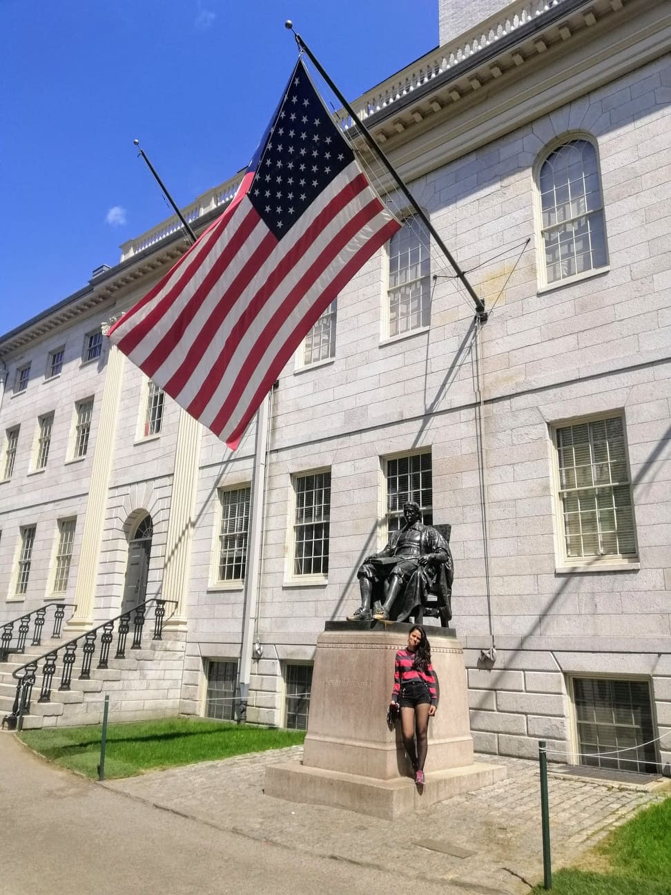
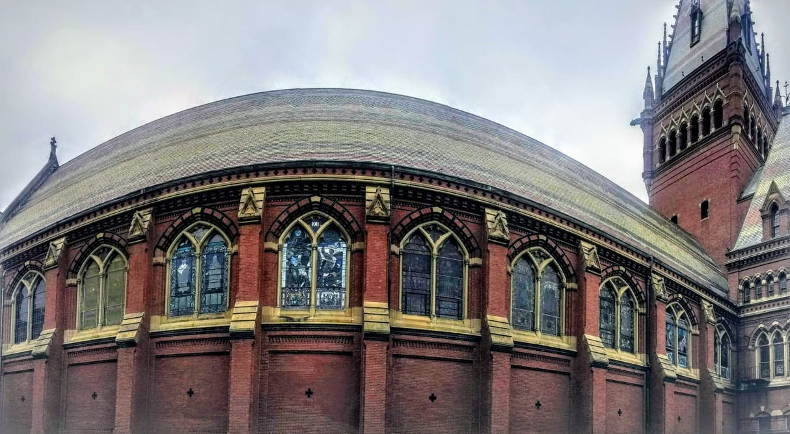
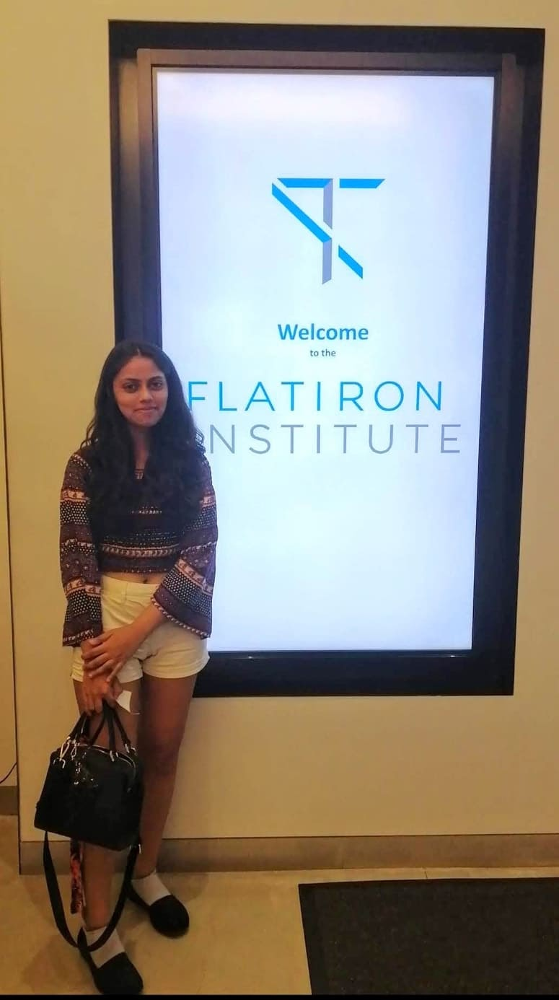
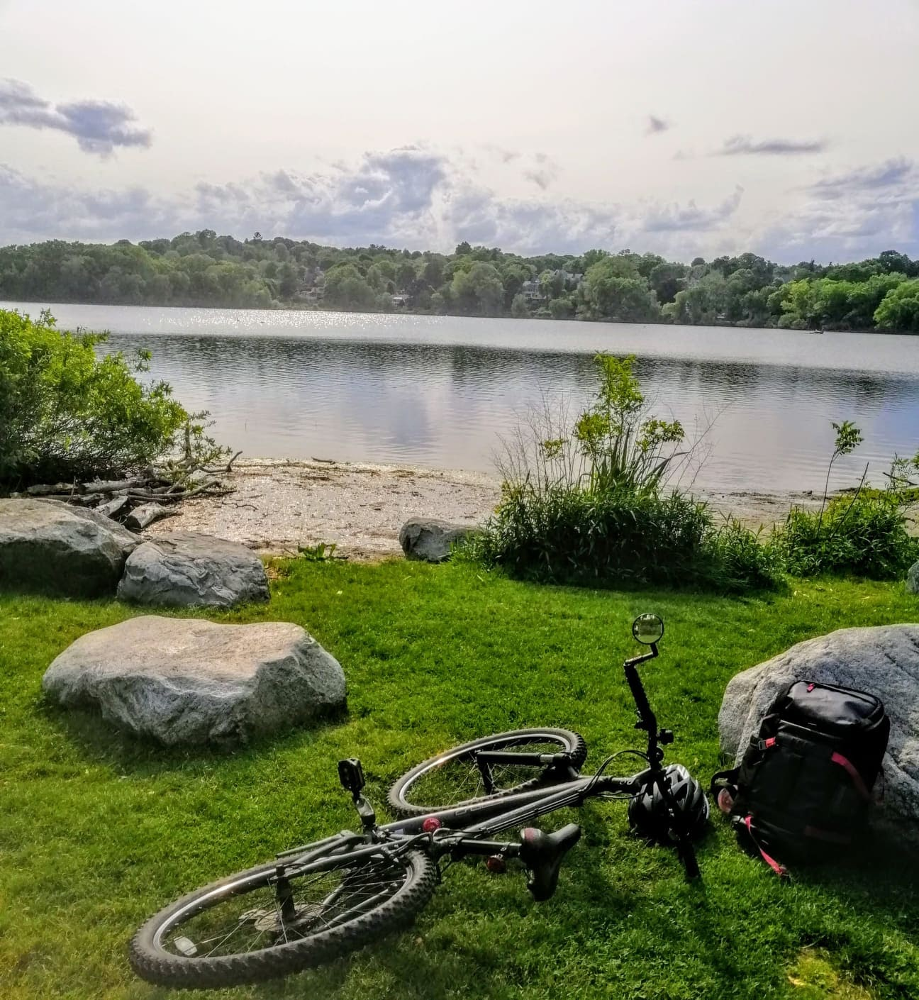

June 10, 2020
Nivedita Vij is an undergraduate student in the Material Science department who interned at Harvard
University in the summer of 2019 in the field of Condensed Matter Physics. Here’s an account of her
application process to the various programs including the DAAD, MITACS, and the SN Bose program, the
article follows with a FAQ section and also a brief excerpt of her life at Boston, New York and her days
at Harvard.
There are two ways to go about this, either brace yourself up and read ahead, which is what many would
call a monotonous ensemble of facts as they happened (related to my third-year internship, of course) or
scroll down and just read the FAQ which will answer most of the questions.
I have always been very clear to choose academia over the industry or the corporate world, so the choice
to apply for academic internships was very natural. When I now think about it, it isn't that black or
white. It just finally breaks down to what type of working environment you feel more drawn towards.
I am in the Material Science and Engineering Department. In the first two years, I was very inclined
towards working in my own department and had spent the first two summers working on experimental
projects on Flexible Electronics (SURGE in 2nd year). In the third year, I got more interested in the
theory of condensed matter so I was doing the relevant courses in my 5th and 6th semester, which
involved some drastic decisions being made - like putting all my department compulsories (including 3
labs) for the final semester.
In any case, I filled in applications for DAAD, MITACS, and the SN Bose programmes.
For DAAD, you need to look for a host professor before the application; for MITACS the professors and
projects are a part of the application, and for Bose, it is all done if you are selected. Therefore, all
three required very different approaches. I was trying to apply to the Physics Department to projects
which I did not have any research background in, so I just had to showcase my consistency and somehow
prove that I genuinely am interested

The professor I wrote to for DAAD asked for a recommendation letter to him and had a Skype interview
with me. He helped me with the application requirements like a well-defined project proposal and also
put me in touch with his office staff for any information I would need.
Choosing projects for MITACS was tedious because you have to optimize between your interest, the
professor, the university and finally what the project requires as background and what learning it is
offering. Gladly, it is all very well stated in the descriptions.
For Bose, firstly, you need to be nominated by your department for holding a rank and secondly it
requires a certificate from your department stating the rank which our DOAA does not provide, so the
SUGC and DUGC have to be consulted and convinced for the same. The application was more focussed on
skills you have acquired, past experiences in research (if any), coursework, what sort of project you
are aiming for, why research, etc. (secret - here you can write whatever you feel at that point,
whatever you see yourself working in. The final things, the professor and what project you work on has
little to do with what is mentioned here, but, keep the general idea in mind that these people are going
to help you look for a professor later so don’t write something completely off your interests).
I did not write any emails to the professors outside of these programs, but it is generally a very good
idea to do so, and there will be seniors who have aced that and would be happy to help.

Next, were the online interviews for MITACS, I think I had three of them for different projects. The
general tone was to gauge if you are suitable for the project in terms of skills acquired so far, and
you also have the opportunity to discuss the working dynamics of the group, to stay and other things,
but that is quite an early stage for those technicalities.
Finally, the results started pouring in. In MITACS, I got selected at a project at the York University
which was a continuation of what I had done in the past two summers, a point to be noted that I was not
emailed or interviewed for this project and this was my last preference in the list. Though not very
elated by this, I felt happy having one option in my hand. Next, came in the results for DAAD and I had
gotten selected to go to the University of Stuttgart. I accepted the proposal and my choice was clear to
choose DAAD over MITACS because the DAAD project was what I was then inclined towards.

Things changed drastically when the acceptance from SN Bose came, which now was going to drive me to a
dilemma. Bose was special to me because I had also applied for Bose in my second year because of the
over-enthusiastic kid I was and had gotten rejected. The Bose program, at least at my time, required us
to send them the names of three professors who we wished to work with and the Bose team would contact
them stating the fact that we were selected and they would be funding us. We were also simultaneously
encouraged to write to the professors ourselves and start the correspondence. I asked a few people who I
knew were studying Physics in the States for recommendations on which professors to choose and which
coast for that matter. I wrote to quite a few people, some did not respond at all, some said they were
too busy in the summer or some said that they would be busy traveling. I got one positive response, from
the professor who I thought would never take me because he is the world's leading expert in the field of
quantum phase transitions and, here, I was a Material Science undergraduate who had just gotten
initiated to the subject.
To make sure I was at least driven to work in the field, he asked for recommendations, specifically from
the Physics department, in relation to the coursework and projects undergoing then. After receiving two
recommendations, we scheduled a Skype interview where he asked about the projects I was working on and
coursework and some textbook knowledge. He was at Harvard University, Department of Physics. It was
almost like a dream come true to be talking to him (the S in SYK, for those who know). He put me in
touch with the officials to initiate the visa application process, this was about the first week of
February and ideally I should have informed DAAD right then that I wish to withdraw. Still, I really
wanted to wait for the visa to be done, because of the high uncertainty of the process.
The visa process, the not-to-say-at-any-cost keywords list are all details I shall refrain from
mentioning here right now, but the interview was mostly centered around what you are doing currently,
what will you be working on, how you came to know about the program and a few more formalities. You get
a stamp on your form, and they take your passport (details new for me because this was my first trip
abroad).

All I remember about reaching Boston in May is literally how freezing it was. Settling in, figuring out
the transportation (given accommodation is sorted beforehand), getting added to group emails, figuring
out food, encashing the stipend cheque (yes, that was insanely tedious) were how the first few days went
by.
Work-wise, it was not hectic at all, I worked at my pace, had graduate students to discuss with, and
also attended talks happening in the group. One of the best parts was joining a summer course from the
Mathematics department on Categorification and Knots. That was the only place I came in contact with the
undergraduate students at Harvard. When my mentor was invited to collaborate from Boston to New York at
Simons Centre, I moved to New York too, which was convenient because I had a family to stay with and
finding accommodation was not a hassle. So, I sort of got an internship within an internship. The work
that I did there was not anywhere near the conclusion in three months and only got to a publishable form
near next January.
So, the key points which I feel should be the take away are:
The beauty that Cambridge city is, the colours and structures and architecture, both old and new, are
very classic in every definition of classic, the lawns so fresh and the libraries so magnificent, the
only thing that was slightly off was that you’ll ‘always’ see groups of tourists being given a tour of
the yard.

One question a lot of people asked me even while I was at Harvard was what difference do you feel here
and in India and honestly, what I absolutely admired was how there is no backdrop of hierarchy,
everyone from a junior undergraduate intern, to senior grad students, professors, very senior
professors, everyone is given equal voice at any table or in any room. Your ideas, thoughts are
acknowledged very gracefully and with the same regard as everyone else's and you are encouraged to
express your opinion. The working environment is great, there are huge chalkboards and cubicles round
every corner of the department to work. The fellow graduate students are always eager to discuss
anything you are working on or if you have any doubts. I cycled from campus in Cambridge to Arlington
(where I lived) everyday and it was amazing, I was surprised how instantly my brain adapted to the
reversed traffic rules. Being an introvert, I did not find myself hanging out with a big group of
fellow Indian interns but I explored bits and parts on my own, visiting all the great museums within
the campus to cycling to MIT. This was Boston, laid back, things at your pace, and then I switched to
New York, I found myself just walking amidst a giant rush of people every morning to reach the
workplace. That city is truly something ineffable. Most weekends were spent reading, some going to the
beach when it started getting warmer in July and a couple walking around where I lived, exploring the
neighbourhood and 11 weeks passed.
Oh! Almost forgot, had a Bose sponsored weekend to Chicago with all the Bose and Khorana fellows.